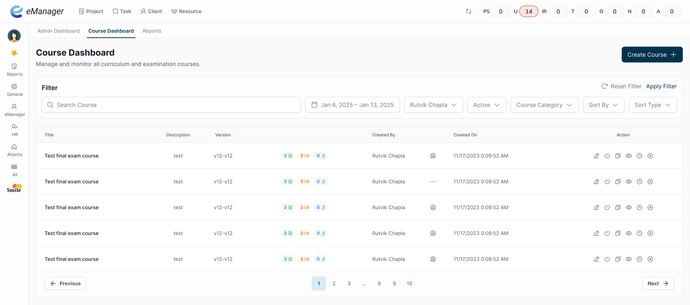
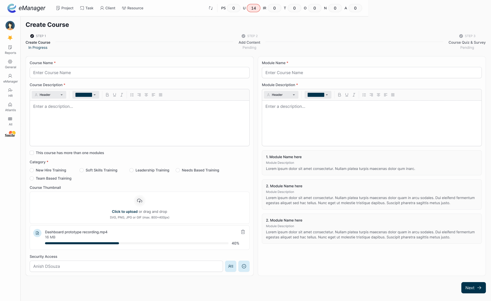

Project Overview
Designed and developed a Learning Management System (LMS) to support training for a large EHR platform used by hospitals and support teams.
Problem Statement
The existing EHR had over 20,000 screens, making it hard for customers to understand workflows and use the system effectively. It was also difficult for the eCW support team to track frequent new enhancements and explain updated workflows to users.
Why This Mattered
In large hospital systems, speed and accuracy directly affect patient care. Providers need to complete tasks quickly, with no room for mistakes.
The EHR tried to keep all documentation in one place, but the workflows were still slow and hard to follow. Users struggled to know:
- Which screens were relevant to their role
- How different steps connected in a workflow
- What had changed after new releases
For the support team, this increased training time, repeated questions, and dependency on manual explanations. This created both user frustration and operational risk.
Hypothesis
What we concluded
- Users were overwhelmed by the size of the system.
- Learning content was not tied to real roles, specialties, or experience levels.
- One-size-fits-all training increased confusion instead of reducing it.
Users did not need to learn the full system. They needed only what applied to them, at the right time.
What we did
- Designed a role-based LMS instead of generic documentation.
- Structured learning around real workflows, not features.
- Limited content visibility based on role, specialty, and experience.
This reduced unnecessary information and helped users focus on what mattered.
Process
Explore
Reviewed existing training materials and support workflows. Mapped key user groups: providers, nurses, admin staff, and support teams. Explored multiple navigation models for large content libraries.
Rejected:
• A single flat course list
Reason: It repeated the same overload problem as the EHR itself.
Iterate
Tested content grouping by modules and workflows. Experimented with chapters and clear learning objectives. Simplified the admin flow for course creation.
Decisions made:
• Could not personalize everything at once due to time and system limits
• Focused first on structure and clarity over advanced AI features
Implement
Built role-based access so users only saw relevant content. Divided courses into chapters with clear learning goals. Designed a simpler, guided flow for creating and managing courses.
Constraints:
• Limited research access
• Tight delivery timelines
• Needed to work with existing enterprise systems
Screenshots & Notes
Old Course Creation
The old interface forced users through 6 distinct steps and 66+ clicks just to launch a course.


New Course Creation
New 3 Step Course creation process with lessthen 18 clicks to complete a single course creation.
Home Screen
Course Screen
Final Solution
The final solution was a new LMS designed for both external users and internal teams.
Key Changes
- Content tailored by role, specialty, and experience.
- Learning divided into chapters with clear objectives.
- Focus on real workflows instead of full system coverage.
Benefits
- Learn only what they needed
- Understand workflows faster
- Reduce confusion when EHR features changed
Support teams could also guide users more consistently using the same learning structure.
Impact & Learnings
Impact
- Reduced course creation steps from 66 clicks to 17 clicks.
- Smoother onboarding for new EHR users.
- Faster understanding of workflows for support teams.
- Less cognitive load during training.
Learnings
- Breaking complex systems into small, goal-based learning units makes a big difference.
- Structure often matters more than adding new features.